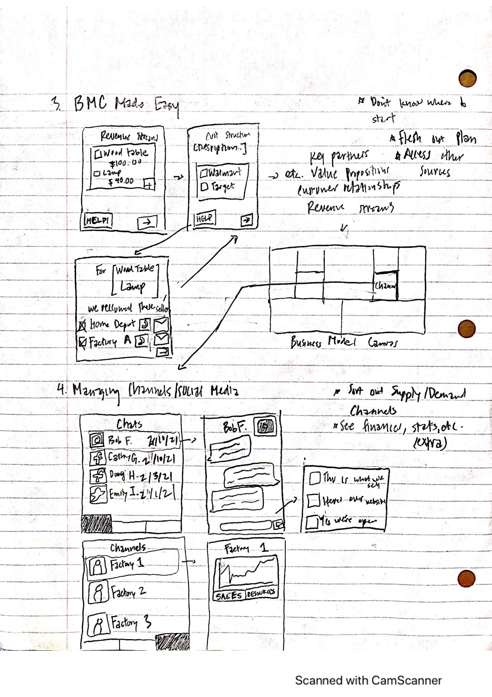

Meranti
During a CMU HCII independent study, I created a stress-free social media marketing platform design specifically for new artisans to explore, plan, and create content for their digital marketing channels.

| Dates | Feb - May 2021 |
|---|---|
| Role | Creator |
| Team | Solo Project with Advisor (Nik Martelaro) |
| Skills | Figma, App Design |
UX Problem
Makers/Entrepreneurs love working on their personal projects, but don't like to market themselves and their products; they feel "icky" when they advertise their products on social media and other platforms.
Summary
During the CMU HCII independent study titled "Makers Making Money", I was asked to analyze a business problem plaguing makers/entrepreneurs and find/prototype a solution. After analyzing pre-recorded customer interviews, I sketched out a few potential designs and ended up selecting a marketing app to prototype in Figma. The app provided makers with a calming interface to manage their social media platforms, plan and create online content, and explore a customized social media "feed" with content inspiration from similar makers.
Context
I was working on this project through CMU's HCII program, which offers students of all majors an opportunity to work with faculty or phD students on a specific project or topic. For the "Makers Making Money" project, I was advised by Nik Martelaro, an Assistant HCII Professor. While it was a solo project, I was in a cohort of 4 students all working on individual projects inspired from the same set of interviews. We met bi-weekly through Zoom to present project progress and provide feedback.
Role
Since this was a personal project, I was in charge of defining the UX problem, ideating/iterating on potential solutions, and ultimately prototyping the final product. I was, however, fortunate enough to have guidance from my advisor as he identified out potential problems, mentioned potential ideas to explore, and provided holistic project feedback.
Research: Interviews
Coming into the project, the professor provided us with some pre-recorded user interviews that were conducted by students the previous semester. Thus, I analyzed the interviews to find the key consumer pain points. Overall, the main theme was that many of the users were simply doing these activities as hobbies, but were unconfident on the business aspects; these included marketing, finance, pricing, etc.
Design Process
Being my first project, the depth of steps were a little bit limited and thus did not contain some steps like user testing due and final implementation due to logistical issues. For this project, the UX process consisted of:
- Ideation based on the primary research - Here, I was exploring different business problems and solutions that makers brought up during the recorded interviews.
- Lo-Fi Mockups - This stage was dedicated to some parallel prototyping, meaning I was creating rough mockups for a few different business solutions (instead of iterating off of one prototype). While parallel prototyping is usually done in the context of one problem, I still found this an effective way to narrow down the best problem statement and solution.
- Branding - After narrowing down my problem and solution, I began to think about the goals of my design and how I could leverage them in the context of the current problem.
- Hi-Fi Mockups - Finally, I prototyped my app idea in Figma that had all of the features I wanted to add; I was also simultaneously implementing my brand identity (colors, goals, etc.) as I added created my final mockup.
Ideation
Due to the amount of freedom in HCII independent studies, I first needed to define my project scope because there were so many possible topics and areas I could tackle. My approach was very similar to a parallel-prototyping process: I had 6 ideas in completely different sectors of business. While I wasn't necessarily prototyping my ideas, I was finding potential sketches and drew some very rough sketches of what these ideas would look like to help visualize them. The parallel prototyping helped me quickly explore multiple options at once, without becoming too attached to the first solution.
After meeting with my advisor, we decided that the marketing idea and mentorship apps were the most attractive ideas; the other ones either:
- Already had market implementation (ex. "Managing Channels": an app that would manage direct messages from different platforms or communication channels, like Facebook, Instagram, etc.)
- Required a lot of information from the user; wouldn't be much of an app but a service that records data (ex. "BMC Made easy": an app that would help you understand the 'Business Model Canvas' (a tool for developing a company's business logistics) based on inputted information, which would be a lot!)
Over the next week I developed the details of both applications. The marketing app was designed to help makers find the ideal digital media channels and marketing strategies based on their target audience. The app would also assist with marketing help in specific areas, like creating the best ad for the Google ad purchasing process, or calculating Key Performance Indicators (i.e. marketing metrics to show how effective an advertising strategy is).
After another chat with my advisor and a rough competitive analysis, we decided that the marketing app provided the most unique solution to makers that was not currently on the market. While there are social media management applications, many of them don't have integrations to for those looking to discover their ideal marketing strategy or post inspiration from their peers.
Lo-Fi Mockups
In order to develop the marketing platform idea, I began with a lo-fi mockup of the platform. The mockup helped clarify the user flow, application layout, and logistical features needed at each stage.
The first two boxes (top left and center left) show the beginning stages; ideally, a new user would download the app, type in very simple/minimal information on their product, and through machine learning/comprehensive datasets, the app would suggest engaging audiences and platforms, which would all have in-app integrations.
The other four boxes are "snapshots" of each of the app features. Since many makers weren't excited about managing business/marketing logistics, the different pages allow for easy flow between planning, creating, exploring, and analyzing content. In the context of usability heuristics (i.e. important design principles), the layout tries to stay consistent with typical apps; many of the components (the navigation bar, the feed, the calendar, etc.) try to make the app really easy to use by reusing components familiar to makers (or anyone who has used social media/other similar platforms).
Branding
In order to convert my lo-fi prototype into a hi-fi prototype, I tried to keep a few core principles in mind as I chose the colors, theme, and overall image of the app.
- Calming - Many makers expressed unpleasant emotions (e.g. icky, frustrated, etc.) associated with trying to market yourself and your products. Thus, the app's mild color pallette and prevalant nature imagery helps creatives feel a little bit more at easy while dealing with some of the more uncomfortable aspects of being an entrepreneur.
- Distilled - Makers and creatives usually have little-to-no background in business. Thus, the platform needed to be intentional in its text and images. As I designed the app, it was important to make many of the features, visuals, and text easy to comprehend since makers may not have advanced knowledge of business/marketing terms and probably didn't have time or weren't interested.
- Elevating - Many makers expressed that in an ideal world, they wouldn't need to promote themselves. Thus, it was vital to design the app with lots of auto-fill/inspiration features to make it easier for makers to create and improve their marketing content.
Hi-Fi Mockups
Input Products
The beginning of the user flow (i.e. sequence of activities) for a new user would start at the input page. The input page allows new users to get marketing strategy recommendations based on their product selection. In order to minimize information required, the program would (in theory) use machine learning/neural networks, or figure out the best strategies based on a large dataset of past products and their successful strategies. The user can then select their favorite strategies.
Home
The home page helps give the user a daily summary of the effectiveness of each of the implemented marketing strategies/platforms with a cute tree with the various platform logos. The simplicity of the home page strikes a balance between information and fun; this particular design engages users by giving them a quick daily summary that's pleasant to look at.
Plan
The "Plan" tab offers users the ability to easily manage their various social media platforms and posting schedules. They can also manage the logistics for each platform; i.e. if a post was created, planned, or posted. Clicking on a day shows you the different platforms you chose and the statuses of the post. From there, you can edit or delete the post.
Create

The "Create" tab is where users can design their social media posts. Users can select photos from their camera roll and add filters to the images. Then, the user can write their caption and plan posting details (i.e. which platform, what time, etc.).
For those who aren't as confident (or excited about) writing captions, pressing the "?" button will generate potential captions for the image; these would use machine learning algorithms to use the photo, as well as tracked user preferences to create the perfect captions.
Explore
The "Explore" tab is a hub for makers to get inspired by their peers for their own marketing materials. Makers can add their own social media accounts (or their business accounts) and get a customized feed from multiple platforms all in the same place. The feed consists of social media posts from similar products/companies; makers can like (upvote) or dislike (downvote) posts to see more/less of those types of pictures/captions in their feed. This information would also be tracked to help generate more customized suggestions in the "Create" tab.
Analyze
The "Analyze" tab gives users a snapshot of their success on different platforms. The app would contain relevant Key Performance Indictors (KPIs), or metrics, that measure social media marketing impact. For those who don't want to interpret the raw data, they can read the app-generated reccomendations created based on the marketing data collected. The app also offers custom feedback for each marketing platform.
Outcomes
The final product of the independent study was the figma prototype of the application itself, along with a small informative video that demonstrates the application's features, both of which can be found below.
Reflection
This project helped me develop fundamental design skills and tools for future projects. This was my first time going through the ideation process and taught me the importance of parallel prototyping and testing out multiple ideas. Especially in the early stages, having so many different ideas and thoughts gave me options to assess project strengths and weaknesses and stay adaptable. This also was my first time really analyzing the effects of design and how I can leverage design to tackle user problems. The overall branding, styles, colors, etc. were all created to harmoniously work together to bring a unique and fun user experience, which was fascinating process to think through. (I also had a lot of fun with the pen tool; the background tree was entirely made from scratch and determination!)
If I had more time, I would love to conduct user testing to see how consumers would interact with my prototype and what they would feel during the entire experience. Since the goal of the design is to simultaneously evoke an emotion (peace/comfort) while accomplishing user tasks, there's a lot of potential in conducting user testing to see how best to improve the overall experience. Moreover, being able to roughly prototype the project (or talking to someone who can) would be very interesting because of the heavy reliance on technology and advanced programs (i.e. machine learning algorithms). This would also be the perfect opportunity to try out Wizard of Oz prototyping, which means having a user test out the app while I (the "Wizard of Oz") would simulate the algorithms and provide the potential marketing strategies, marketing advice, etc.